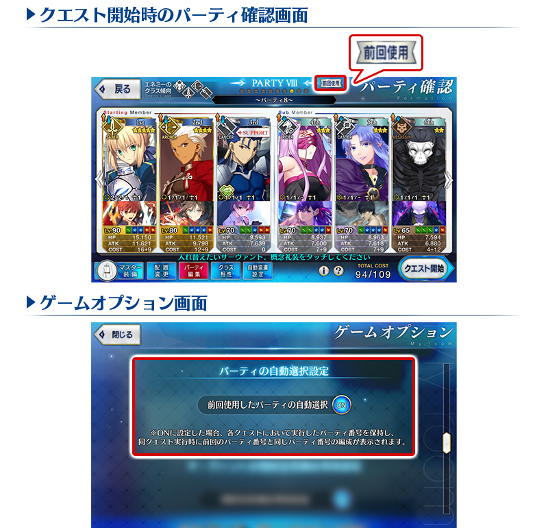

- 10/4
- 【來自迦勒底廣報局】關於10月的遊戲更新
非常感謝各位使用「Fate/Grand Order」。
來自迦勒底廣報局，告知關於預定2021年10月的下次遊戲更新。
以下介紹更新後反映的更新內容中，具有代表性的更新內容。
預定在2021年11月舉辦的期間限定活動，其參加條件預定為通過「地獄界曼荼羅 平安京 轟雷一閃」。
無論如何，如果推進主線關卡的攻略會有所幫助。
①在關卡開始時更容易選擇上次使用的隊伍
修改成在每個關卡都會保存上次使用的隊伍編號，在下次關卡開始時的隊伍確認畫面中會在上次使用的隊伍顯示「前回使用」記號。
※保存的只有隊伍編號，不保存隊伍的內容。
※上次使用情報保存的關卡數有上限，超過上限的情況會從最久的上次使用情報刪除。
另外，追加在關卡開始時自動選擇上次使用隊伍的遊戲選項。
此設定ON的話，在進行多個關卡時，減少切換適合各關卡隊伍的不便。

※開發中畫面。
②技能等級提升時的演出修改成能跳過
自從者技能強化畫面顯示保有技能強化時的演出，修改成點擊畫面後可跳過。
※今後的遊戲更新預定對應寶具等級提升，附加技能等級提升等。
※開發中畫面。
③支援選擇畫面的「列表更新」鍵的UI調整
為了更容易點擊，調整支援選擇畫面的「列表更新」鍵的位置與設計。

※開發中畫面。
以上為預定2021年10月實施的下次遊戲更新主要內容。
另外，今後也預定在期間限定活動和期間限定宣傳活動中，會有將通過主線關卡設為開放條件的情況。
無論如何，如果推進主線關卡的攻略會有所幫助。
今後也請多多指教「Fate/Grand Order」。